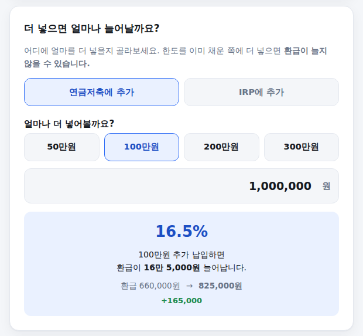

연금저축이나 IRP에 돈을 넣긴 넣었는데, 정작 연말정산에서 얼마 환급받는지는 계산해본 적 없는 분이 많습니다. 총급여와 납입액만 넣으면 세액공제액을 바로 계산해주고, 여기에 얼마를 더 넣으면 환급이 얼마나 늘어나는지까지 보여주는 계산기를 만들었습니다. 쓰는 법은 아래와 같습니다.
-
총급여(또는 종합소득금액) 입력
근로자는 총급여, 자영업자 등 사업소득자는 종합소득금액 기준입니다. 이 금액이 5,500만원(종합소득금액 4,500만원)을 넘는지 아닌지에 따라 공제율이 16.5%에서 13.2%로 바뀝니다.
소득 입력 화면
-
연금저축·IRP 납입액 입력
올해 넣었거나 넣을 예정인 금액을 각각 넣습니다. 연금저축은 단독으로 600만원까지만 세액공제 대상으로 인정되고, 연금저축과 IRP를 합쳐서는 900만원까지 인정됩니다. IRP는 단독으로 900만원까지도 가능합니다. 한도를 넘긴 금액이 있으면 계산기가 바로 알려드립니다.
연금저축·IRP 납입액 입력 화면
-
결과 확인 — 예상 환급액
맨 위에 예상 환급액(세액공제액)이 크게 나오고, 아래 표에서 연금저축 인정액·IRP 인정액·공제대상액 합계·공제율이 각각 얼마인지 확인할 수 있습니다.
결과 화면
-
더 넣으면 얼마나 늘어나는지 시뮬레이션
연금저축과 IRP 중 어디에 추가로 넣을지 고르고 금액을 입력하면, 환급액이 얼마나 늘어나는지 바로 계산해줍니다. 이미 한도를 다 채운 쪽에 더 넣으면 환급이 늘지 않는다는 것도 이 화면에서 바로 확인할 수 있습니다.

추가 납입 시뮬레이션 화면
연금저축만 900만원 넣어도 소용없습니다
연금저축은 단독으로는 600만원이 상한입니다. 이미 600만원을 채운 상태에서 연금저축에 계속 넣어도 세액공제는 늘지 않습니다. 남은 300만원(900만원 − 600만원) 한도를 채우려면 반드시 IRP로 넣어야 합니다. 이 계산기의 시뮬레이션 기능이 바로 이 부분을 확인하기 위해 만들어졌습니다.
소득은 공제율에만 영향을 줍니다
2023년 세법 개정으로 50세 이상 추가공제(200만원)와 총급여 1.2억원 초과자의 한도 축소 규정이 모두 폐지되었습니다. 지금은 나이나 소득 수준과 관계없이 600만원/900만원 한도가 동일하게 적용되고, 소득은 오직 공제율(16.5% 또는 13.2%)에만 영향을 줍니다.
계산은 참고용이며 세무 조언이 아닙니다. 연금을 나중에 수령할 때 붙는 연금소득세 등 인출 단계의 세금은 반영하지 않았습니다. 기준: 소득세법 제59조의3 및 조세특례제한법, 2026년 공개 자료 교차검증.